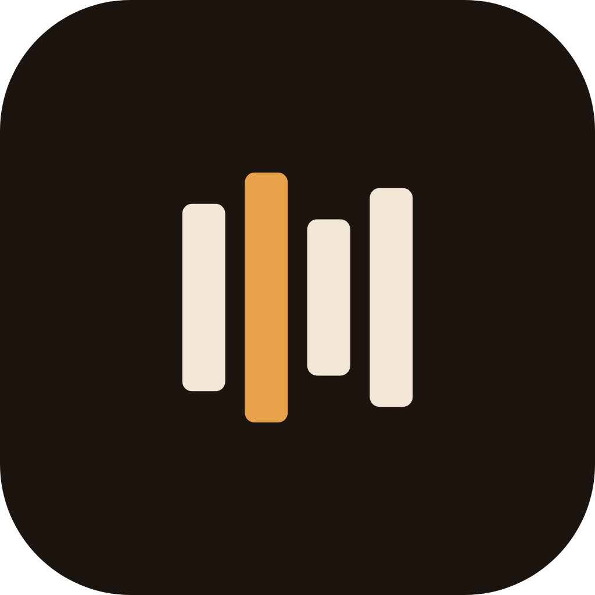

One mark, every playback moment. Paused folds into the play triangle; playing reacts to loudness; and the same four spines cover buffering, downloading, idle and finished. Toggle the canonical mark below.
// ONE CustomPainter draws all states. `t` morphs // triangle(0)→bars(1); `levels` sets the 4 heights. class SpinePainter extends CustomPainter { SpinePainter({required this.t, required this.levels}); final double t; // 0 triangle · 1 bars final List<double> levels; // 4 heights 0..1 static const tri = [/*4×4 Offsets*/]; static const bar = [/*4×4 Offsets*/]; @override void paint(Canvas c, Size size) { final s = size.width / 200.0; for (var i = 0; i < 4; i++) { final p = List.generate(4, (k) => Offset.lerp(tri[i][k], bar[i][k], t)!); final cy = (p[0].dy + p[2].dy) / 2; final h = lerpDouble(1, levels[i].clamp(.16,1), t)!; final q = p.map((o) => Offset(o.dx, cy + (o.dy-cy)*h) * s).toList(); c.drawPath(Path()..addPolygon(q, true), Paint()..color = i==1 ? accent : cream); } } @override bool shouldRepaint(o)=>o.t!=t||o.levels!=levels; }
// Each STATE is just a different `levels` source. // play → morph.forward(); pause → morph.reverse(); // (one AnimationController drives `t`) // PLAYING — loudness envelope (speech, not FFT): levels = base.map((_,i) => (rms + 0.18*sin(phase*rate[i]+off[i])).clamp(.16,1)); // BUFFERING — staggered sine, no audio needed: levels = [for (var i=0;i<4;i++) .3 + .7*((sin(phase - i*.5)+1)/2)]; // DOWNLOADING — determinate, bar = quarter of %: levels = [for (var i=0;i<4;i++) (progress*4 - i).clamp(.14, 1.0)]; // BREATHING — single slow LFO on all four: levels = List.filled(4, .82 + .18*sin(phase*.6)); // FINISHED — one-shot overshoot curve, then settle. // RMS source: Android Visualizer / iOS AVAudioEngine // tap → vDSP RMS. FFT is overkill for narration.



